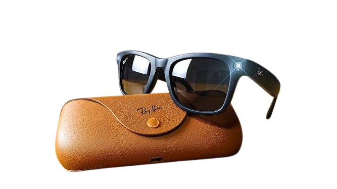
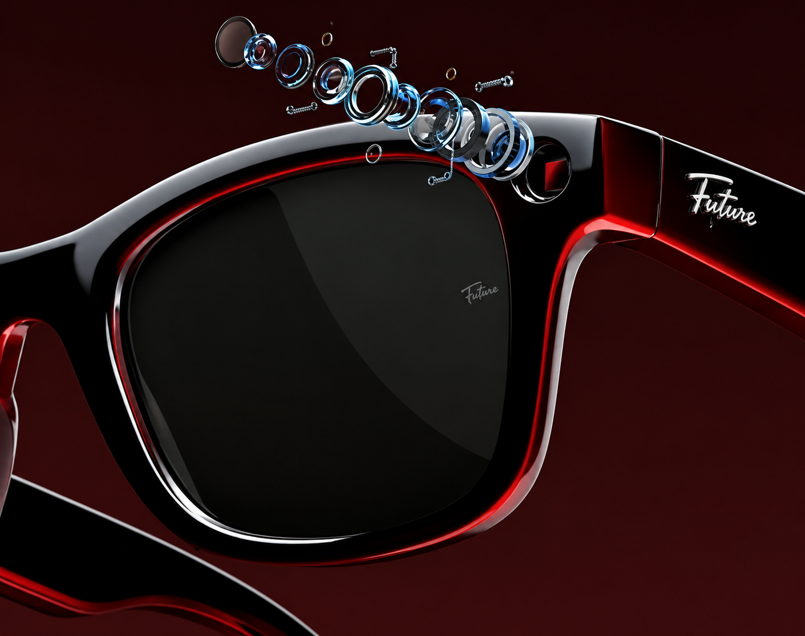
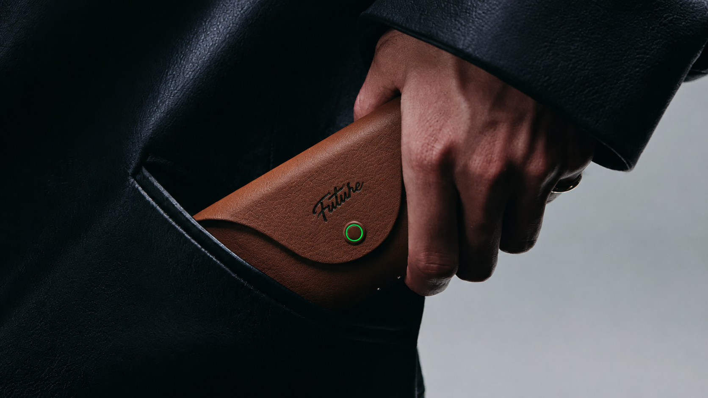
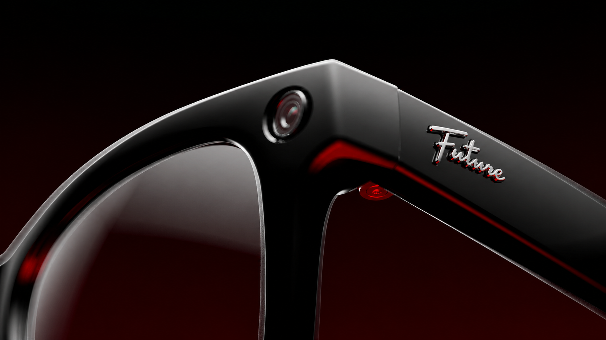

Óculos Inteligentes
Tecnologia que combina visão, áudio e inteligência artificial.

Isabelly Moreira
Tecnologia que transforma a maneira como vivemos, trabalhamos e enxergamos o futuro.
Saiba mais.


Tecnologia que combina visão, áudio e inteligência artificial.
Sistemas capazes de aprender e auxiliar nas tarefas do dia a dia.
Objetos conectados que trocam informações pela internet.
Este projeto apresenta tecnologias que fazem parte da evolução do mundo visual e auditivo. Melhor experiência a cada olhar.